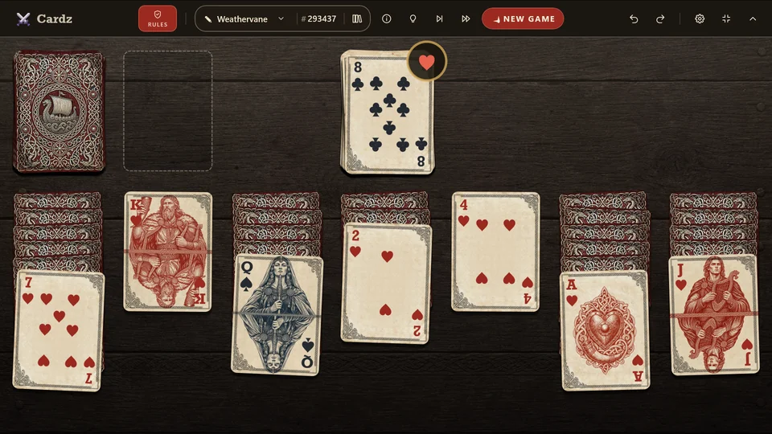

Play an eight, name the wind
Weathervane
One deck
Hidden: 5 · 6
Cardz original A new solitaire, invented for Cardz rather than handed down at the card table.

Goal: clear all seven tableau columns onto the vane.
- Play the top card of a column, or the top of the waste, onto the vane when it matches the vane's top card in rank or suit.
- Eights are wild. An eight plays on any card, and when you play one you name the suit that must follow it — until it is covered, the vane takes that suit, or another eight.
- Name a suit you cannot serve and the vane is shut until that suit turns up.
- Each column hides 5 or 6 face-down cards under its face-up one, as the variant says; taking the face-up card turns up the next.
- The eights are your steering. Every card hidden in a column is one fewer in the stock, so the deeper the columns, the less there is to draw: spend an eight on a pile an ordinary card would have covered and you may not get another chance to turn the vane.
- Tap the stock to turn one of its cards onto the waste (one pass only — no recycling). Only the top waste card is playable, and the vane's top card changes only when you play on it.
- Nothing to play and an empty stock? The game is lost.
- Your score is the number of cards left in the tableau, lower is better. Clear the tableau and each card left in the stock takes one off.
Variants
The rules above are Weathervane. Here is how the other variants differ.
Weathervane (6 Hidden)
Goal: clear all seven tableau columns onto the vane.
- Play the top card of a column, or the top of the waste, onto the vane when it matches the vane's top card in rank or suit.
- Eights are wild. An eight plays on any card, and when you play one you name the suit that must follow it — until it is covered, the vane takes that suit, or another eight.
- Name a suit you cannot serve and the vane is shut until that suit turns up.
- Each column hides 5 or 6 face-down cards under its face-up one, as the variant says; taking the face-up card turns up the next.
- The eights are your steering. Every card hidden in a column is one fewer in the stock, so the deeper the columns, the less there is to draw: spend an eight on a pile an ordinary card would have covered and you may not get another chance to turn the vane.
- Tap the stock to turn one of its cards onto the waste (one pass only — no recycling). Only the top waste card is playable, and the vane's top card changes only when you play on it.
- Nothing to play and an empty stock? The game is lost.
- Your score is the number of cards left in the tableau, lower is better. Clear the tableau and each card left in the stock takes one off.
Read its design file 30 lines
One pile that takes any card matching its top in rank or suit, wild eights that name the suit which must follow them, and a stock that draws to a waste instead of onto the pile. This is Weathervane; the other variants change a line or two. Make a game explains every part of it.
{
"name": "Weathervane",
"family": "Golf",
"description": "**Goal:** clear all seven tableau columns onto the vane.\n\n- Play the **top card** of a column, or the top of the **waste**, onto the vane when it matches the vane's top card in **rank or suit**.\n- **Eights are wild.** An eight plays on any card, and when you play one you **name the suit** that must follow it — until it is covered, the vane takes that suit, or another eight.\n- Name a suit you cannot serve and the vane is shut until that suit turns up.\n- Each column hides **5 or 6 face-down cards** under its face-up one, as the variant says; taking the face-up card **turns up** the next.\n- **The eights are your steering.** Every card hidden in a column is one fewer in the stock, so the deeper the columns, the less there is to draw: spend an eight on a pile an ordinary card would have covered and you may not get another chance to turn the vane.\n- Tap the **stock** to turn one of its cards onto the waste (one pass only — no recycling). Only the top waste card is playable, and the vane's top card changes **only when you play on it**.\n- Nothing to play and an empty stock? The game is **lost**.\n- Your **score** is the number of cards left in the tableau, lower is better. Clear the tableau and each card left in the stock takes one off.",
"depots": [
{ "type": "Stock", "col": 0, "row": 0, "name": "stock", "acceptRule": "none",
"ejectRule": "locked", "draw": { "to": "waste" } },
{ "type": "Waste", "col": 1, "row": 0, "name": "waste", "acceptRule": "none",
"ejectRule": "topOnly" },
{ "type": "Foundation", "col": 3, "row": 0, "name": "vane",
"acceptRule": { "follow": true, "wildRank": "Eight", "wildDeclares": "suit" },
"ejectRule": "locked" },
{ "type": "Tableau", "col": 0, "row": 1, "name": "tab", "repeat": 7, "acceptRule": "none",
"ejectRule": "topOnly", "autoFlipTop": true }
],
"dealRules": [
{ "kind": "dealGroup", "to": "tab", "faceDown": 5, "roundRobin": true },
{ "kind": "dealGroup", "to": "tab", "faceUp": 1, "roundRobin": true },
{ "kind": "dealGroup", "to": "vane", "faceUp": 1 }
],
"depotOnly": true,
"winCondition": { "kind": "depotsEmpty", "depots": "Tableau" },
"lossCondition": { "kind": "noLegalMoves" },
"scoring": {
"value": "sum(Tableau, count(it)) - count(stock, empty(Tableau))",
"better": "Low",
"keep": "Over"
},
"tools": "None"
}
Play it inCardz for Windows
No ads, no accounts, fully offline.